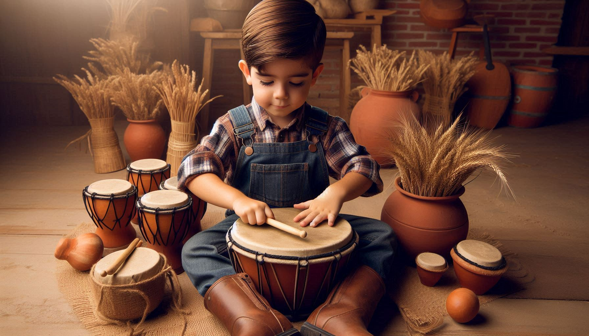

.
Roberto Andradina quando criança, brincando com tambores e panelas de sua casa aos 5 anos de idade.

.
Roberto Andradina ganhando seu primeiro vioção, sem saber que aquela seria a primeira ferramenta que o levaria ao estrelato e sucesso atual.
.
Roberto Andradina gravando seu grande sucesso "Amor de Fazenda"
.
Roberto Andradina ganhando Grammy Latino de sertanejo por artista country do milênio.
.